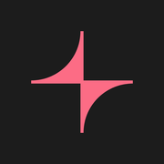

«Пульс» для компьютера
Яндекс Музыка в дизайне «Пульса»: друзья, совместное прослушивание в «Искре», «Моя волна», живой текст и свои файлы с компьютера. Нужен аккаунт Яндекс Музыки.
Последняя версия …
Mac с Apple Silicon
Чипы M1, M2, M3, M4 · macOS 11 и новее Скачать для Apple SiliconMac с процессором Intel
macOS 11 и новее Скачать для IntelЧто нового
- Загружаю…
Какой у меня Mac?
Меню Apple в левом верхнем углу экрана → «Об этом Mac». Написано «Чип Apple M…» — берите Apple Silicon, «Процессор Intel» — версию для Intel.
Установка на Mac
Распакуйте и перетащите Pulse в «Программы». При первом запуске macOS спросит, открывать ли программу из интернета: «Системные настройки → Конфиденциальность и безопасность → Всё равно открыть». Дальше «Пульс» обновляется сам — и на Windows тоже.